Optimization Methods#
Until now, you’ve always used Gradient Descent to update the parameters and minimize the cost. In this notebook, you’ll gain skills with some more advanced optimization methods that can speed up learning and perhaps even get you to a better final value for the cost function. Having a good optimization algorithm can be the difference between waiting days vs. just a few hours to get a good result.
By the end of this notebook, you’ll be able to:
Apply optimization methods such as (Stochastic) Gradient Descent, Momentum, RMSProp and Adam
Use random minibatches to accelerate convergence and improve optimization
Gradient descent goes “downhill” on a cost function \(J\). Think of it as trying to do this:
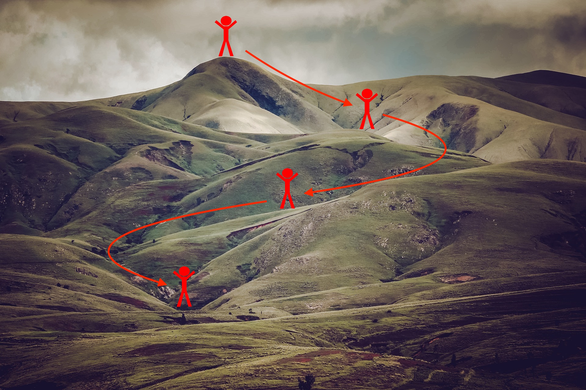
At each step of the training, you update your parameters following a certain direction to try to get to the lowest possible point.
Notations: As usual, \(\frac{\partial J}{\partial a } = \) da for any variable a.
Let’s get started!
Important Note on Submission to the AutoGrader#
Before submitting your assignment to the AutoGrader, please make sure you are not doing the following:
You have not added any extra
printstatement(s) in the assignment.You have not added any extra code cell(s) in the assignment.
You have not changed any of the function parameters.
You are not using any global variables inside your graded exercises. Unless specifically instructed to do so, please refrain from it and use the local variables instead.
You are not changing the assignment code where it is not required, like creating extra variables.
If you do any of the following, you will get something like, Grader Error: Grader feedback not found (or similarly unexpected) error upon submitting your assignment. Before asking for help/debugging the errors in your assignment, check for these first. If this is the case, and you don’t remember the changes you have made, you can get a fresh copy of the assignment by following these instructions.
1- Packages#
### v1.4
!pip install dlai_tools
Requirement already satisfied: dlai_tools in c:\users\sangouda\python_apps\lib\site-packages (0.6.1)
[notice] A new release of pip is available: 25.0.1 -> 25.2
[notice] To update, run: python.exe -m pip install --upgrade pip
import numpy as np
import matplotlib.pyplot as plt
import scipy.io
import math
import sklearn
import sklearn.datasets
from opt_utils_v1a import load_params_and_grads, initialize_parameters, forward_propagation, backward_propagation
from opt_utils_v1a import compute_cost, predict, predict_dec, plot_decision_boundary, load_dataset
from copy import deepcopy
from testCases import *
from public_tests import *
%matplotlib inline
plt.rcParams['figure.figsize'] = (7.0, 4.0) # set default size of plots
plt.rcParams['image.interpolation'] = 'nearest'
plt.rcParams['image.cmap'] = 'gray'
%load_ext autoreload
%autoreload 2
2 - Gradient Descent#
A simple optimization method in machine learning is gradient descent (GD). When you take gradient steps with respect to all \(m\) examples on each step, it is also called Batch Gradient Descent.
Exercise 1 - update_parameters_with_gd#
Implement the gradient descent update rule. The gradient descent rule is, for \(l = 1, ..., L\): $\( W^{[l]} = W^{[l]} - \alpha \text{ } dW^{[l]} \tag{1}\)\( \)\( b^{[l]} = b^{[l]} - \alpha \text{ } db^{[l]} \tag{2}\)$
where L is the number of layers and \(\alpha\) is the learning rate. All parameters should be stored in the parameters dictionary. Note that the iterator l starts at 1 in the for loop as the first parameters are \(W^{[1]}\) and \(b^{[1]}\).
# GRADED FUNCTION: update_parameters_with_gd
def update_parameters_with_gd(parameters, grads, learning_rate):
"""
Update parameters using one step of gradient descent
Arguments:
parameters -- python dictionary containing your parameters to be updated:
parameters['W' + str(l)] = Wl
parameters['b' + str(l)] = bl
grads -- python dictionary containing your gradients to update each parameters:
grads['dW' + str(l)] = dWl
grads['db' + str(l)] = dbl
learning_rate -- the learning rate, scalar.
Returns:
parameters -- python dictionary containing your updated parameters
"""
L = len(parameters) // 2 # number of layers in the neural networks
# Update rule for each parameter
for l in range(1, L + 1):
# (approx. 2 lines)
# parameters["W" + str(l)] =
# parameters["b" + str(l)] =
# YOUR CODE STARTS HERE
parameters["W" + str(l)] = parameters["W" + str(l)] - learning_rate * grads["dW" + str(l)]
parameters["b" + str(l)] = parameters["b" + str(l)] - learning_rate * grads["db" + str(l)]
# YOUR CODE ENDS HERE
return parameters
parameters, grads, learning_rate = update_parameters_with_gd_test_case()
learning_rate = 0.01
parameters = update_parameters_with_gd(parameters, grads, learning_rate)
print("W1 =\n" + str(parameters["W1"]))
print("b1 =\n" + str(parameters["b1"]))
print("W2 =\n" + str(parameters["W2"]))
print("b2 =\n" + str(parameters["b2"]))
update_parameters_with_gd_test(update_parameters_with_gd)
W1 =
[[ 1.63312395 -0.61217855 -0.5339999 ]
[-1.06196243 0.85396039 -2.3105546 ]]
b1 =
[[ 1.73978682]
[-0.77021546]]
W2 =
[[ 0.32587637 -0.24814147]
[ 1.47146563 -2.05746183]
[-0.32772076 -0.37713775]]
b2 =
[[ 1.13773698]
[-1.09301954]
[-0.16397615]]
All tests passed
A variant of this is Stochastic Gradient Descent (SGD), which is equivalent to mini-batch gradient descent, where each mini-batch has just 1 example. The update rule that you have just implemented does not change. What changes is that you would be computing gradients on just one training example at a time, rather than on the whole training set. The code examples below illustrate the difference between stochastic gradient descent and (batch) gradient descent.
(Batch) Gradient Descent:
X = data_input
Y = labels
m = X.shape[1] # Number of training examples
parameters = initialize_parameters(layers_dims)
for i in range(0, num_iterations):
# Forward propagation
a, caches = forward_propagation(X, parameters)
# Compute cost
cost_total = compute_cost(a, Y) # Cost for m training examples
# Backward propagation
grads = backward_propagation(a, caches, parameters)
# Update parameters
parameters = update_parameters(parameters, grads)
# Compute average cost
cost_avg = cost_total / m
Stochastic Gradient Descent:
X = data_input
Y = labels
m = X.shape[1] # Number of training examples
parameters = initialize_parameters(layers_dims)
for i in range(0, num_iterations):
cost_total = 0
for j in range(0, m):
# Forward propagation
a, caches = forward_propagation(X[:,j], parameters)
# Compute cost
cost_total += compute_cost(a, Y[:,j]) # Cost for one training example
# Backward propagation
grads = backward_propagation(a, caches, parameters)
# Update parameters
parameters = update_parameters(parameters, grads)
# Compute average cost
cost_avg = cost_total / m
In Stochastic Gradient Descent, you use only 1 training example before updating the gradients. When the training set is large, SGD can be faster. But the parameters will “oscillate” toward the minimum rather than converge smoothly. Here’s what that looks like:
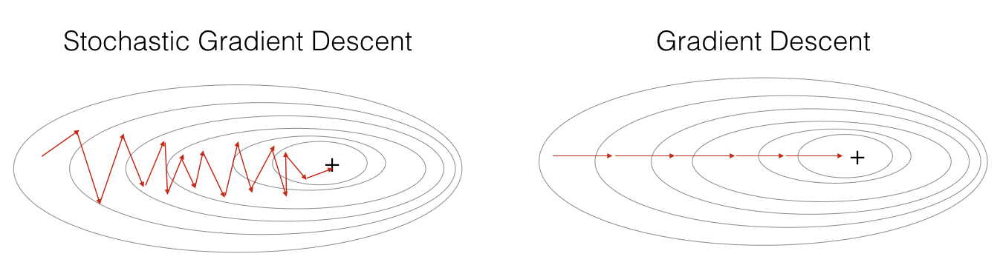
"+" denotes a minimum of the cost. SGD leads to many oscillations to reach convergence, but each step is a lot faster to compute for SGD than it is for GD, as it uses only one training example (vs. the whole batch for GD).
Note also that implementing SGD requires 3 for-loops in total:
Over the number of iterations
Over the \(m\) training examples
Over the layers (to update all parameters, from \((W^{[1]},b^{[1]})\) to \((W^{[L]},b^{[L]})\))
In practice, you’ll often get faster results if you don’t use the entire training set, or just one training example, to perform each update. Mini-batch gradient descent uses an intermediate number of examples for each step. With mini-batch gradient descent, you loop over the mini-batches instead of looping over individual training examples.
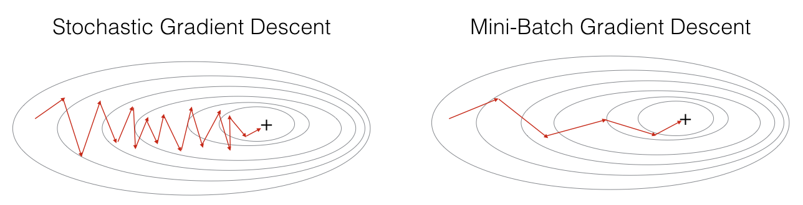
"+" denotes a minimum of the cost. Using mini-batches in your optimization algorithm often leads to faster optimization.
3 - Mini-Batch Gradient Descent#
Now you’ll build some mini-batches from the training set (X, Y).
There are two steps:
Shuffle: Create a shuffled version of the training set (X, Y) as shown below. Each column of X and Y represents a training example. Note that the random shuffling is done synchronously between X and Y. Such that after the shuffling the \(i^{th}\) column of X is the example corresponding to the \(i^{th}\) label in Y. The shuffling step ensures that examples will be split randomly into different mini-batches.
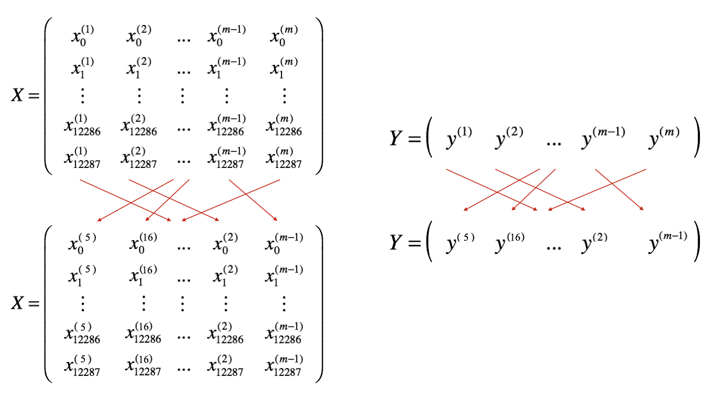
Partition: Partition the shuffled (X, Y) into mini-batches of size
mini_batch_size(here 64). Note that the number of training examples is not always divisible bymini_batch_size. The last mini batch might be smaller, but you don’t need to worry about this. When the final mini-batch is smaller than the fullmini_batch_size, it will look like this:

Exercise 2 - random_mini_batches#
Implement random_mini_batches. The shuffling part has already been coded for you! To help with the partitioning step, you’ve been provided the following code that selects the indexes for the \(1^{st}\) and \(2^{nd}\) mini-batches:
first_mini_batch_X = shuffled_X[:, 0 : mini_batch_size]
second_mini_batch_X = shuffled_X[:, mini_batch_size : 2 * mini_batch_size]
...
Note that the last mini-batch might end up smaller than mini_batch_size=64. Let \(\lfloor s \rfloor\) represents \(s\) rounded down to the nearest integer (this is math.floor(s) in Python). If the total number of examples is not a multiple of mini_batch_size=64 then there will be \(\left\lfloor \frac{m}{mini\_batch\_size}\right\rfloor\) mini-batches with a full 64 examples, and the number of examples in the final mini-batch will be \(\left(m-mini_\_batch_\_size \times \left\lfloor \frac{m}{mini\_batch\_size}\right\rfloor\right)\).
Hint:
Think of a way in which you can use the for loop variable k help you increment i and j in multiples of mini_batch_size.
As an example, if you want to increment in multiples of 3, you could the following:
n = 3
for k in (0 , 5):
print(k * n)
# GRADED FUNCTION: random_mini_batches
def random_mini_batches(X, Y, mini_batch_size = 64, seed = 0):
"""
Creates a list of random minibatches from (X, Y)
Arguments:
X -- input data, of shape (input size, number of examples)
Y -- true "label" vector (1 for blue dot / 0 for red dot), of shape (1, number of examples)
mini_batch_size -- size of the mini-batches, integer
Returns:
mini_batches -- list of synchronous (mini_batch_X, mini_batch_Y)
"""
np.random.seed(seed) # To make your "random" minibatches the same as ours
m = X.shape[1] # number of training examples
mini_batches = []
# Step 1: Shuffle (X, Y)
permutation = list(np.random.permutation(m))
shuffled_X = X[:, permutation]
shuffled_Y = Y[:, permutation].reshape((1, m))
inc = mini_batch_size
# Step 2 - Partition (shuffled_X, shuffled_Y).
# Cases with a complete mini batch size only i.e each of 64 examples.
num_complete_minibatches = math.floor(m / mini_batch_size) # number of mini batches of size mini_batch_size in your partitionning
for k in range(0, num_complete_minibatches):
# (approx. 2 lines)
# mini_batch_X =
# mini_batch_Y =
# YOUR CODE STARTS HERE
mini_batch_X = shuffled_X[:, k * mini_batch_size : (k + 1) * mini_batch_size]
mini_batch_Y = shuffled_Y[:, k * mini_batch_size : (k + 1) * mini_batch_size]
# YOUR CODE ENDS HERE
mini_batch = (mini_batch_X, mini_batch_Y)
mini_batches.append(mini_batch)
# For handling the end case (last mini-batch < mini_batch_size i.e less than 64)
if m % mini_batch_size != 0:
#(approx. 2 lines)
# mini_batch_X =
# mini_batch_Y =
# YOUR CODE STARTS HERE
mini_batch_X = shuffled_X[:, num_complete_minibatches * mini_batch_size :]
mini_batch_Y = shuffled_Y[:, num_complete_minibatches * mini_batch_size :]
# YOUR CODE ENDS HERE
mini_batch = (mini_batch_X, mini_batch_Y)
mini_batches.append(mini_batch)
return mini_batches
np.random.seed(1)
mini_batch_size = 64
nx = 12288
m = 148
X = np.array([x for x in range(nx * m)]).reshape((m, nx)).T
Y = np.random.randn(1, m) < 0.5
print("X shape:", X.shape)
print("Y shape:", Y.shape)
print("First few X values:", X[:5, :3])
mini_batches = random_mini_batches(X, Y, mini_batch_size, seed=1)
n_batches = len(mini_batches)
print("Number of batches:", n_batches)
print("Expected number:", math.ceil(m / mini_batch_size))
# Check the first mini-batch
first_batch_X = mini_batches[0][0]
print("First batch X shape:", first_batch_X.shape)
print("First batch first few values:", first_batch_X[:5, :3])
# Calculate the test value
test_val = np.sum(np.sum(first_batch_X - first_batch_X[0], axis=0))
expected_val = ((nx * (nx - 1) / 2 ) * mini_batch_size)
print("Test value:", test_val)
print("Expected value:", expected_val)
print("Match:", test_val == expected_val)
X shape: (12288, 148)
Y shape: (1, 148)
First few X values: [[ 0 12288 24576]
[ 1 12289 24577]
[ 2 12290 24578]
[ 3 12291 24579]
[ 4 12292 24580]]
Number of batches: 3
Expected number: 3
First batch X shape: (12288, 64)
First batch first few values: [[1228800 1486848 663552]
[1228801 1486849 663553]
[1228802 1486850 663554]
[1228803 1486851 663555]
[1228804 1486852 663556]]
Test value: 4831444992
Expected value: 4831444992.0
Match: True
t_X, t_Y, mini_batch_size = random_mini_batches_test_case()
mini_batches = random_mini_batches(t_X, t_Y, mini_batch_size)
print ("shape of the 1st mini_batch_X: " + str(mini_batches[0][0].shape))
print ("shape of the 2nd mini_batch_X: " + str(mini_batches[1][0].shape))
print ("shape of the 3rd mini_batch_X: " + str(mini_batches[2][0].shape))
print ("shape of the 1st mini_batch_Y: " + str(mini_batches[0][1].shape))
print ("shape of the 2nd mini_batch_Y: " + str(mini_batches[1][1].shape))
print ("shape of the 3rd mini_batch_Y: " + str(mini_batches[2][1].shape))
print ("mini batch sanity check: " + str(mini_batches[0][0][0][0:3]))
random_mini_batches_test(random_mini_batches)
shape of the 1st mini_batch_X: (12288, 64)
shape of the 2nd mini_batch_X: (12288, 64)
shape of the 3rd mini_batch_X: (12288, 20)
shape of the 1st mini_batch_Y: (1, 64)
shape of the 2nd mini_batch_Y: (1, 64)
shape of the 3rd mini_batch_Y: (1, 20)
mini batch sanity check: [ 0.90085595 -0.7612069 0.2344157 ]
All tests passed.
What you should remember:
Shuffling and Partitioning are the two steps required to build mini-batches
Powers of two are often chosen to be the mini-batch size, e.g., 16, 32, 64, 128.
4 - Momentum#
Because mini-batch gradient descent makes a parameter update after seeing just a subset of examples, the direction of the update has some variance, and so the path taken by mini-batch gradient descent will “oscillate” toward convergence. Using momentum can reduce these oscillations.
Momentum takes into account the past gradients to smooth out the update. The ‘direction’ of the previous gradients is stored in the variable \(v\). Formally, this will be the exponentially weighted average of the gradient on previous steps. You can also think of \(v\) as the “velocity” of a ball rolling downhill, building up speed (and momentum) according to the direction of the gradient/slope of the hill.
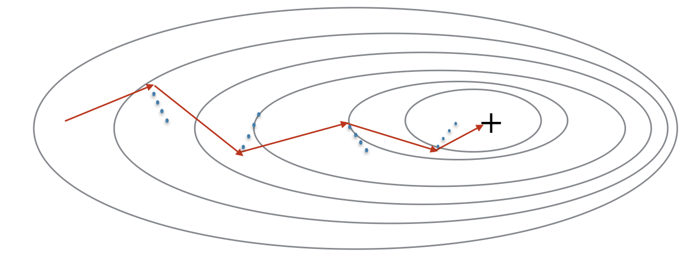
Exercise 3 - initialize_velocity#
Initialize the velocity. The velocity, \(v\), is a python dictionary that needs to be initialized with arrays of zeros. Its keys are the same as those in the grads dictionary, that is:
for \(l =1,...,L\):
v["dW" + str(l)] = ... #(numpy array of zeros with the same shape as parameters["W" + str(l)])
v["db" + str(l)] = ... #(numpy array of zeros with the same shape as parameters["b" + str(l)])
Note that the iterator l starts at 1 in the for loop as the first parameters are v[“dW1”] and v[“db1”] (that’s a “one” on the superscript).
# GRADED FUNCTION: initialize_velocity
def initialize_velocity(parameters):
"""
Initializes the velocity as a python dictionary with:
- keys: "dW1", "db1", ..., "dWL", "dbL"
- values: numpy arrays of zeros of the same shape as the corresponding gradients/parameters.
Arguments:
parameters -- python dictionary containing your parameters.
parameters['W' + str(l)] = Wl
parameters['b' + str(l)] = bl
Returns:
v -- python dictionary containing the current velocity.
v['dW' + str(l)] = velocity of dWl
v['db' + str(l)] = velocity of dbl
"""
L = len(parameters) // 2 # number of layers in the neural networks
v = {}
# Initialize velocity
for l in range(1, L + 1):
# (approx. 2 lines)
# v["dW" + str(l)] =
# v["db" + str(l)] =
# YOUR CODE STARTS HERE
v["dW" + str(l)] = np.zeros_like(parameters["W" + str(l)])
v["db" + str(l)] = np.zeros_like(parameters["b" + str(l)])
# YOUR CODE ENDS HERE
return v
parameters = initialize_velocity_test_case()
v = initialize_velocity(parameters)
print("v[\"dW1\"] =\n" + str(v["dW1"]))
print("v[\"db1\"] =\n" + str(v["db1"]))
print("v[\"dW2\"] =\n" + str(v["dW2"]))
print("v[\"db2\"] =\n" + str(v["db2"]))
initialize_velocity_test(initialize_velocity)
v["dW1"] =
[[0. 0.]
[0. 0.]
[0. 0.]]
v["db1"] =
[[0.]
[0.]
[0.]]
v["dW2"] =
[[0. 0. 0.]
[0. 0. 0.]
[0. 0. 0.]]
v["db2"] =
[[0.]
[0.]
[0.]]
All tests passed.
Exercise 4 - update_parameters_with_momentum#
Now, implement the parameters update with momentum. The momentum update rule is, for \(l = 1, ..., L\):
where L is the number of layers, \(\beta\) is the momentum and \(\alpha\) is the learning rate. All parameters should be stored in the parameters dictionary. Note that the iterator l starts at 1 in the for loop as the first parameters are \(W^{[1]}\) and \(b^{[1]}\) (that’s a “one” on the superscript).
# GRADED FUNCTION: update_parameters_with_momentum
def update_parameters_with_momentum(parameters, grads, v, beta, learning_rate):
"""
Update parameters using Momentum
Arguments:
parameters -- python dictionary containing your parameters:
parameters['W' + str(l)] = Wl
parameters['b' + str(l)] = bl
grads -- python dictionary containing your gradients for each parameters:
grads['dW' + str(l)] = dWl
grads['db' + str(l)] = dbl
v -- python dictionary containing the current velocity:
v['dW' + str(l)] = ...
v['db' + str(l)] = ...
beta -- the momentum hyperparameter, scalar
learning_rate -- the learning rate, scalar
Returns:
parameters -- python dictionary containing your updated parameters
v -- python dictionary containing your updated velocities
"""
L = len(parameters) // 2 # number of layers in the neural networks
# Momentum update for each parameter
for l in range(1, L + 1):
# (approx. 4 lines)
# compute velocities
# v["dW" + str(l)] = ...
# v["db" + str(l)] = ...
# update parameters
# parameters["W" + str(l)] = ...
# parameters["b" + str(l)] = ...
# YOUR CODE STARTS HERE
# compute velocities
v["dW" + str(l)] = beta * v["dW" + str(l)] + (1 - beta) * grads["dW" + str(l)]
v["db" + str(l)] = beta * v["db" + str(l)] + (1 - beta) * grads["db" + str(l)]
# update parameters
parameters["W" + str(l)] = parameters["W" + str(l)] - learning_rate * v["dW" + str(l)]
parameters["b" + str(l)] = parameters["b" + str(l)] - learning_rate * v["db" + str(l)]
# YOUR CODE ENDS HERE
return parameters, v
parameters, grads, v = update_parameters_with_momentum_test_case()
parameters, v = update_parameters_with_momentum(parameters, grads, v, beta = 0.9, learning_rate = 0.01)
print("W1 = \n" + str(parameters["W1"]))
print("b1 = \n" + str(parameters["b1"]))
print("W2 = \n" + str(parameters["W2"]))
print("b2 = \n" + str(parameters["b2"]))
print("v[\"dW1\"] = \n" + str(v["dW1"]))
print("v[\"db1\"] = \n" + str(v["db1"]))
print("v[\"dW2\"] = \n" + str(v["dW2"]))
print("v[\"db2\"] = v" + str(v["db2"]))
update_parameters_with_momentum_test(update_parameters_with_momentum)
W1 =
[[ 1.62522322 -0.61179863 -0.52875457]
[-1.071868 0.86426291 -2.30244029]]
b1 =
[[ 1.74430927]
[-0.76210776]]
W2 =
[[ 0.31972282 -0.24924749]
[ 1.46304371 -2.05987282]
[-0.32294756 -0.38336269]]
b2 =
[[ 1.1341662 ]
[-1.09920409]
[-0.171583 ]]
v["dW1"] =
[[-0.08778584 0.00422137 0.05828152]
[-0.11006192 0.11447237 0.09015907]]
v["db1"] =
[[0.05024943]
[0.09008559]]
v["dW2"] =
[[-0.06837279 -0.01228902]
[-0.09357694 -0.02678881]
[ 0.05303555 -0.06916608]]
v["db2"] = v[[-0.03967535]
[-0.06871727]
[-0.08452056]]
All tests passed.
Note that:
The velocity is initialized with zeros. So the algorithm will take a few iterations to “build up” velocity and start to take bigger steps.
If \(\beta = 0\), then this just becomes standard gradient descent without momentum.
How do you choose \(\beta\)?
The larger the momentum \(\beta\) is, the smoother the update, because it takes the past gradients into account more. But if \(\beta\) is too big, it could also smooth out the updates too much.
Common values for \(\beta\) range from 0.8 to 0.999. If you don’t feel inclined to tune this, \(\beta = 0.9\) is often a reasonable default.
Tuning the optimal \(\beta\) for your model might require trying several values to see what works best in terms of reducing the value of the cost function \(J\).
What you should remember:
Momentum takes past gradients into account to smooth out the steps of gradient descent. It can be applied with batch gradient descent, mini-batch gradient descent or stochastic gradient descent.
You have to tune a momentum hyperparameter \(\beta\) and a learning rate \(\alpha\).
5 - Adam#
Adam is one of the most effective optimization algorithms for training neural networks. It combines ideas from RMSProp (described in lecture) and Momentum.
How does Adam work?
It calculates an exponentially weighted average of past gradients, and stores it in variables \(v\) (before bias correction) and \(v^{corrected}\) (with bias correction).
It calculates an exponentially weighted average of the squares of the past gradients, and stores it in variables \(s\) (before bias correction) and \(s^{corrected}\) (with bias correction).
It updates parameters in a direction based on combining information from “1” and “2”.
The update rule is, for \(l = 1, ..., L\): $\( \begin{cases} v_{dW^{[l]}} = \beta_1 v_{dW^{[l]}} + (1 - \beta_1) \frac{\partial \mathcal{J} }{ \partial W^{[l]} } \\ v^{corrected}_{dW^{[l]}} = \frac{v_{dW^{[l]}}}{1 - (\beta_1)^t} \\ s_{dW^{[l]}} = \beta_2 s_{dW^{[l]}} + (1 - \beta_2) (\frac{\partial \mathcal{J} }{\partial W^{[l]} })^2 \\ s^{corrected}_{dW^{[l]}} = \frac{s_{dW^{[l]}}}{1 - (\beta_2)^t} \\ W^{[l]} = W^{[l]} - \alpha \frac{v^{corrected}_{dW^{[l]}}}{\sqrt{s^{corrected}_{dW^{[l]}}} + \varepsilon} \end{cases}\)$ where:
t counts the number of steps taken of Adam
L is the number of layers
\(\beta_1\) and \(\beta_2\) are hyperparameters that control the two exponentially weighted averages.
\(\alpha\) is the learning rate
\(\varepsilon\) is a very small number to avoid dividing by zero
As usual, all parameters are stored in the parameters dictionary
Exercise 5 - initialize_adam#
Initialize the Adam variables \(v, s\) which keep track of the past information.
Instruction: The variables \(v, s\) are python dictionaries that need to be initialized with arrays of zeros. Their keys are the same as for grads, that is:
for \(l = 1, ..., L\):
v["dW" + str(l)] = ... #(numpy array of zeros with the same shape as parameters["W" + str(l)])
v["db" + str(l)] = ... #(numpy array of zeros with the same shape as parameters["b" + str(l)])
s["dW" + str(l)] = ... #(numpy array of zeros with the same shape as parameters["W" + str(l)])
s["db" + str(l)] = ... #(numpy array of zeros with the same shape as parameters["b" + str(l)])
# GRADED FUNCTION: initialize_adam
def initialize_adam(parameters) :
"""
Initializes v and s as two python dictionaries with:
- keys: "dW1", "db1", ..., "dWL", "dbL"
- values: numpy arrays of zeros of the same shape as the corresponding gradients/parameters.
Arguments:
parameters -- python dictionary containing your parameters.
parameters["W" + str(l)] = Wl
parameters["b" + str(l)] = bl
Returns:
v -- python dictionary that will contain the exponentially weighted average of the gradient. Initialized with zeros.
v["dW" + str(l)] = ...
v["db" + str(l)] = ...
s -- python dictionary that will contain the exponentially weighted average of the squared gradient. Initialized with zeros.
s["dW" + str(l)] = ...
s["db" + str(l)] = ...
"""
L = len(parameters) // 2 # number of layers in the neural networks
v = {}
s = {}
# Initialize v, s. Input: "parameters". Outputs: "v, s".
for l in range(1, L + 1):
# (approx. 4 lines)
# v["dW" + str(l)] = ...
# v["db" + str(l)] = ...
# s["dW" + str(l)] = ...
# s["db" + str(l)] = ...
# YOUR CODE STARTS HERE
v["dW" + str(l)] = np.zeros_like(parameters["W" + str(l)])
v["db" + str(l)] = np.zeros_like(parameters["b" + str(l)])
s["dW" + str(l)] = np.zeros_like(parameters["W" + str(l)])
s["db" + str(l)] = np.zeros_like(parameters["b" + str(l)])
# YOUR CODE ENDS HERE
return v, s
parameters = initialize_adam_test_case()
v, s = initialize_adam(parameters)
print("v[\"dW1\"] = \n" + str(v["dW1"]))
print("v[\"db1\"] = \n" + str(v["db1"]))
print("v[\"dW2\"] = \n" + str(v["dW2"]))
print("v[\"db2\"] = \n" + str(v["db2"]))
print("s[\"dW1\"] = \n" + str(s["dW1"]))
print("s[\"db1\"] = \n" + str(s["db1"]))
print("s[\"dW2\"] = \n" + str(s["dW2"]))
print("s[\"db2\"] = \n" + str(s["db2"]))
initialize_adam_test(initialize_adam)
v["dW1"] =
[[0. 0. 0.]
[0. 0. 0.]]
v["db1"] =
[[0.]
[0.]]
v["dW2"] =
[[0. 0.]
[0. 0.]
[0. 0.]]
v["db2"] =
[[0.]
[0.]
[0.]]
s["dW1"] =
[[0. 0. 0.]
[0. 0. 0.]]
s["db1"] =
[[0.]
[0.]]
s["dW2"] =
[[0. 0.]
[0. 0.]
[0. 0.]]
s["db2"] =
[[0.]
[0.]
[0.]]
All tests passed.
Exercise 6 - update_parameters_with_adam#
Now, implement the parameters update with Adam. Recall the general update rule is, for \(l = 1, ..., L\):
Note that the iterator l starts at 1 in the for loop as the first parameters are \(W^{[1]}\) and \(b^{[1]}\).
# GRADED FUNCTION: update_parameters_with_adam
def update_parameters_with_adam(parameters, grads, v, s, t, learning_rate = 0.01,
beta1 = 0.9, beta2 = 0.999, epsilon = 1e-8):
"""
Update parameters using the Adam optimization algorithm.
Arguments:
parameters -- python dictionary containing your parameters:
parameters['W' + str(l)] = Wl
parameters['b' + str(l)] = bl
grads -- python dictionary containing your gradients for each parameter:
grads['dW' + str(l)] = dWl
grads['db' + str(l)] = dbl
v -- Adam variable, moving average of the first gradient, maintained as a python dictionary
s -- Adam variable, moving average of the squared gradient, maintained as a python dictionary
t -- Adam variable, counts the number of steps taken for bias correction
learning_rate -- learning rate, scalar
beta1 -- exponential decay hyperparameter for the first moment estimates
beta2 -- exponential decay hyperparameter for the second moment estimates
epsilon -- hyperparameter to prevent division by zero in the Adam update, a small scalar
Returns:
parameters -- python dictionary containing your updated parameters
v -- updated Adam variable, moving average of the first gradient, python dictionary
s -- updated Adam variable, moving average of the squared gradient, python dictionary
v_corrected -- python dictionary containing bias-corrected first moment estimates
s_corrected -- python dictionary containing bias-corrected second moment estimates
"""
L = len(parameters) // 2 # number of layers in the neural networks
v_corrected = {} # Initializing first moment estimate, python dictionary
s_corrected = {} # Initializing second moment estimate, python dictionary
# Perform Adam update on all parameters
for l in range(1, L + 1):
# Moving average of the gradients. Inputs: "v, grads, beta1". Output: "v".
# (approx. 2 lines)
# v["dW" + str(l)] = ...
# v["db" + str(l)] = ...
# YOUR CODE STARTS HERE
v["dW" + str(l)] = beta1 * v["dW" + str(l)] + (1 - beta1) * grads["dW" + str(l)]
v["db" + str(l)] = beta1 * v["db" + str(l)] + (1 - beta1) * grads["db" + str(l)]
# YOUR CODE ENDS HERE
# Compute bias-corrected first moment estimate. Inputs: "v, beta1, t". Output: "v_corrected".
# (approx. 2 lines)
# v_corrected["dW" + str(l)] = ...
# v_corrected["db" + str(l)] = ...
# YOUR CODE STARTS HERE
v_corrected["dW" + str(l)] = v["dW" + str(l)] / (1 - beta1**t)
v_corrected["db" + str(l)] = v["db" + str(l)] / (1 - beta1**t)
# YOUR CODE ENDS HERE
# Moving average of the squared gradients. Inputs: "s, grads, beta2". Output: "s".
#(approx. 2 lines)
# s["dW" + str(l)] = ...
# s["db" + str(l)] = ...
# YOUR CODE STARTS HERE
s["dW" + str(l)] = beta2 * s["dW" + str(l)] + (1 - beta2) * (grads["dW" + str(l)]**2)
s["db" + str(l)] = beta2 * s["db" + str(l)] + (1 - beta2) * (grads["db" + str(l)]**2)
# YOUR CODE ENDS HERE
# Compute bias-corrected second raw moment estimate. Inputs: "s, beta2, t". Output: "s_corrected".
# (approx. 2 lines)
# s_corrected["dW" + str(l)] = ...
# s_corrected["db" + str(l)] = ...
# YOUR CODE STARTS HERE
s_corrected["dW" + str(l)] = s["dW" + str(l)] / (1 - beta2**t)
s_corrected["db" + str(l)] = s["db" + str(l)] / (1 - beta2**t)
# YOUR CODE ENDS HERE
# Update parameters. Inputs: "parameters, learning_rate, v_corrected, s_corrected, epsilon". Output: "parameters".
# (approx. 2 lines)
# parameters["W" + str(l)] = ...
# parameters["b" + str(l)] = ...
# YOUR CODE STARTS HERE
parameters["W" + str(l)] = parameters["W" + str(l)] - learning_rate * v_corrected["dW" + str(l)] / (np.sqrt(s_corrected["dW" + str(l)]) + epsilon)
parameters["b" + str(l)] = parameters["b" + str(l)] - learning_rate * v_corrected["db" + str(l)] / (np.sqrt(s_corrected["db" + str(l)]) + epsilon)
# YOUR CODE ENDS HERE
return parameters, v, s, v_corrected, s_corrected
parametersi, grads, vi, si, t, learning_rate, beta1, beta2, epsilon = update_parameters_with_adam_test_case()
parameters, v, s, vc, sc = update_parameters_with_adam(parametersi, grads, vi, si, t, learning_rate, beta1, beta2, epsilon)
print(f"W1 = \n{parameters['W1']}")
print(f"W2 = \n{parameters['W2']}")
print(f"b1 = \n{parameters['b1']}")
print(f"b2 = \n{parameters['b2']}")
update_parameters_with_adam_test(update_parameters_with_adam)
W1 =
[[ 1.63937725 -0.62327448 -0.54308727]
[-1.0578897 0.85032154 -2.31657668]]
W2 =
[[ 0.33400549 -0.23563857]
[ 1.47715417 -2.04561842]
[-0.33729882 -0.36908457]]
b1 =
[[ 1.72995096]
[-0.7762447 ]]
b2 =
[[ 1.14852557]
[-1.08492339]
[-0.15740527]]
All tests passed
Expected values:
W1 =
[[ 1.63937725 -0.62327448 -0.54308727]
[-1.0578897 0.85032154 -2.31657668]]
W2 =
[[ 0.33400549 -0.23563857]
[ 1.47715417 -2.04561842]
[-0.33729882 -0.36908457]]
b1 =
[[ 1.72995096]
[-0.7762447 ]]
b2 =
[[ 1.14852557]
[-1.08492339]
[-0.15740527]]
You now have three working optimization algorithms (mini-batch gradient descent, Momentum, Adam). Let’s implement a model with each of these optimizers and observe the difference.
6 - Model with different Optimization algorithms#
Below, you’ll use the following “moons” dataset to test the different optimization methods. (The dataset is named “moons” because the data from each of the two classes looks a bit like a crescent-shaped moon.)
train_X, train_Y = load_dataset()
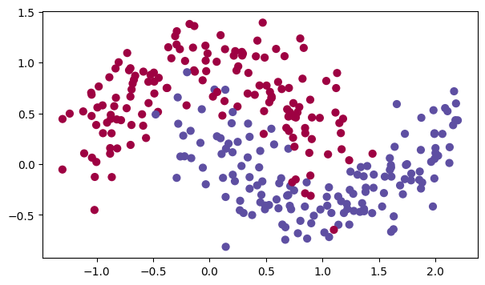
A 3-layer neural network has already been implemented for you! You’ll train it with:
Mini-batch Gradient Descent: it will call your function:
update_parameters_with_gd()
Mini-batch Momentum: it will call your functions:
initialize_velocity()andupdate_parameters_with_momentum()
Mini-batch Adam: it will call your functions:
initialize_adam()andupdate_parameters_with_adam()
def model(X, Y, layers_dims, optimizer, learning_rate = 0.0007, mini_batch_size = 64, beta = 0.9,
beta1 = 0.9, beta2 = 0.999, epsilon = 1e-8, num_epochs = 5000, print_cost = True):
"""
3-layer neural network model which can be run in different optimizer modes.
Arguments:
X -- input data, of shape (2, number of examples)
Y -- true "label" vector (1 for blue dot / 0 for red dot), of shape (1, number of examples)
optimizer -- the optimizer to be passed, gradient descent, momentum or adam
layers_dims -- python list, containing the size of each layer
learning_rate -- the learning rate, scalar.
mini_batch_size -- the size of a mini batch
beta -- Momentum hyperparameter
beta1 -- Exponential decay hyperparameter for the past gradients estimates
beta2 -- Exponential decay hyperparameter for the past squared gradients estimates
epsilon -- hyperparameter preventing division by zero in Adam updates
num_epochs -- number of epochs
print_cost -- True to print the cost every 1000 epochs
Returns:
parameters -- python dictionary containing your updated parameters
"""
L = len(layers_dims) # number of layers in the neural networks
costs = [] # to keep track of the cost
t = 0 # initializing the counter required for Adam update
seed = 10 # For grading purposes, so that your "random" minibatches are the same as ours
m = X.shape[1] # number of training examples
# Initialize parameters
parameters = initialize_parameters(layers_dims)
# Initialize the optimizer
if optimizer == "gd":
pass # no initialization required for gradient descent
elif optimizer == "momentum":
v = initialize_velocity(parameters)
elif optimizer == "adam":
v, s = initialize_adam(parameters)
# Optimization loop
for i in range(num_epochs):
# Define the random minibatches. We increment the seed to reshuffle differently the dataset after each epoch
seed = seed + 1
minibatches = random_mini_batches(X, Y, mini_batch_size, seed)
cost_total = 0
for minibatch in minibatches:
# Select a minibatch
(minibatch_X, minibatch_Y) = minibatch
# Forward propagation
a3, caches = forward_propagation(minibatch_X, parameters)
# Compute cost and add to the cost total
cost_total += compute_cost(a3, minibatch_Y)
# Backward propagation
grads = backward_propagation(minibatch_X, minibatch_Y, caches)
# Update parameters
if optimizer == "gd":
parameters = update_parameters_with_gd(parameters, grads, learning_rate)
elif optimizer == "momentum":
parameters, v = update_parameters_with_momentum(parameters, grads, v, beta, learning_rate)
elif optimizer == "adam":
t = t + 1 # Adam counter
parameters, v, s, _, _ = update_parameters_with_adam(parameters, grads, v, s,
t, learning_rate, beta1, beta2, epsilon)
cost_avg = cost_total / m
# Print the cost every 1000 epoch
if print_cost and i % 1000 == 0:
print ("Cost after epoch %i: %f" %(i, cost_avg))
if print_cost and i % 100 == 0:
costs.append(cost_avg)
# plot the cost
plt.plot(costs)
plt.ylabel('cost')
plt.xlabel('epochs (per 100)')
plt.title("Learning rate = " + str(learning_rate))
plt.show()
return parameters
Now, run this 3 layer neural network with each of the 3 optimization methods.
6.1 - Mini-Batch Gradient Descent#
Run the following code to see how the model does with mini-batch gradient descent.
# train 3-layer model
layers_dims = [train_X.shape[0], 5, 2, 1]
parameters = model(train_X, train_Y, layers_dims, optimizer = "gd")
# Predict
predictions = predict(train_X, train_Y, parameters)
# Plot decision boundary
plt.title("Model with Gradient Descent optimization")
axes = plt.gca()
axes.set_xlim([-1.5,2.5])
axes.set_ylim([-1,1.5])
plot_decision_boundary(lambda x: predict_dec(parameters, x.T), train_X, train_Y)
Cost after epoch 0: 0.702405
Cost after epoch 1000: 0.668101
Cost after epoch 2000: 0.635288
Cost after epoch 3000: 0.600491
Cost after epoch 4000: 0.573367
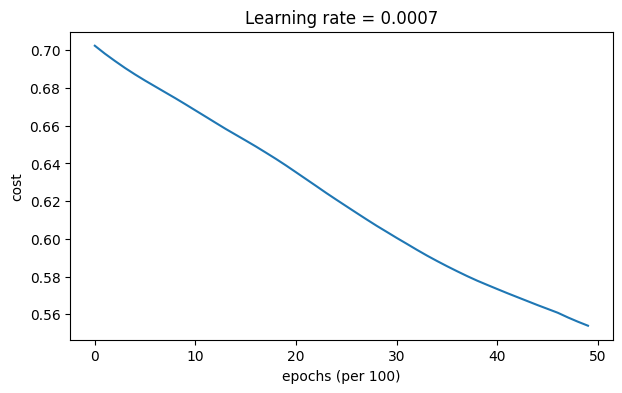
Accuracy: 0.7166666666666667
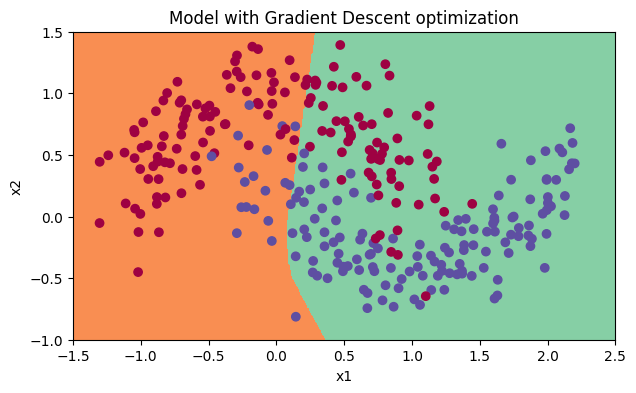
6.2 - Mini-Batch Gradient Descent with Momentum#
Next, run the following code to see how the model does with momentum. Because this example is relatively simple, the gains from using momemtum are small - but for more complex problems you might see bigger gains.
# train 3-layer model
layers_dims = [train_X.shape[0], 5, 2, 1]
parameters = model(train_X, train_Y, layers_dims, beta = 0.9, optimizer = "momentum")
# Predict
predictions = predict(train_X, train_Y, parameters)
# Plot decision boundary
plt.title("Model with Momentum optimization")
axes = plt.gca()
axes.set_xlim([-1.5,2.5])
axes.set_ylim([-1,1.5])
plot_decision_boundary(lambda x: predict_dec(parameters, x.T), train_X, train_Y)
Cost after epoch 0: 0.702413
Cost after epoch 1000: 0.668167
Cost after epoch 2000: 0.635388
Cost after epoch 3000: 0.600591
Cost after epoch 4000: 0.573444
Accuracy: 0.7166666666666667
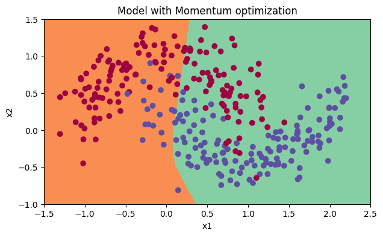
6.3 - Mini-Batch with Adam#
Finally, run the following code to see how the model does with Adam.
# train 3-layer model
layers_dims = [train_X.shape[0], 5, 2, 1]
parameters = model(train_X, train_Y, layers_dims, optimizer = "adam")
# Predict
predictions = predict(train_X, train_Y, parameters)
# Plot decision boundary
plt.title("Model with Adam optimization")
axes = plt.gca()
axes.set_xlim([-1.5,2.5])
axes.set_ylim([-1,1.5])
plot_decision_boundary(lambda x: predict_dec(parameters, x.T), train_X, train_Y)
Cost after epoch 0: 0.702166
Cost after epoch 1000: 0.167845
Cost after epoch 2000: 0.141316
Cost after epoch 3000: 0.138788
Cost after epoch 4000: 0.136066
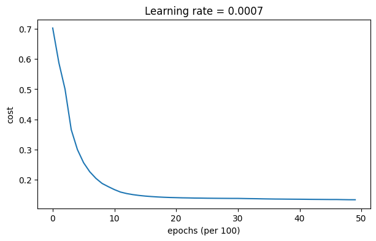
Accuracy: 0.9433333333333334
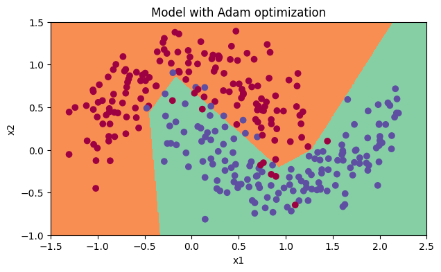
6.4 - Summary#
| optimization method | accuracy | cost shape | Gradient descent | >71% | smooth |
| Momentum | >71% | smooth |
| Adam | >94% | smoother |
Momentum usually helps, but given the small learning rate and the simplistic dataset, its impact is almost negligible.
On the other hand, Adam clearly outperforms mini-batch gradient descent and Momentum. If you run the model for more epochs on this simple dataset, all three methods will lead to very good results. However, you’ve seen that Adam converges a lot faster.
Some advantages of Adam include:
Relatively low memory requirements (though higher than gradient descent and gradient descent with momentum)
Usually works well even with little tuning of hyperparameters (except \(\alpha\))
References:
Adam paper: https://arxiv.org/pdf/1412.6980.pdf
7 - Learning Rate Decay and Scheduling#
Lastly, the learning rate is another hyperparameter that can help you speed up learning.
During the first part of training, your model can get away with taking large steps, but over time, using a fixed value for the learning rate alpha can cause your model to get stuck in a wide oscillation that never quite converges. But if you were to slowly reduce your learning rate alpha over time, you could then take smaller, slower steps that bring you closer to the minimum. This is the idea behind learning rate decay.
Learning rate decay can be achieved by using either adaptive methods or pre-defined learning rate schedules.
Now, you’ll apply scheduled learning rate decay to a 3-layer neural network in three different optimizer modes and see how each one differs, as well as the effect of scheduling at different epochs.
This model is essentially the same as the one you used before, except in this one you’ll be able to include learning rate decay. It includes two new parameters, decay and decay_rate.
def model(X, Y, layers_dims, optimizer, learning_rate = 0.0007, mini_batch_size = 64, beta = 0.9,
beta1 = 0.9, beta2 = 0.999, epsilon = 1e-8, num_epochs = 5000, print_cost = True, decay=None, decay_rate=1):
"""
3-layer neural network model which can be run in different optimizer modes.
Arguments:
X -- input data, of shape (2, number of examples)
Y -- true "label" vector (1 for blue dot / 0 for red dot), of shape (1, number of examples)
layers_dims -- python list, containing the size of each layer
learning_rate -- the learning rate, scalar.
mini_batch_size -- the size of a mini batch
beta -- Momentum hyperparameter
beta1 -- Exponential decay hyperparameter for the past gradients estimates
beta2 -- Exponential decay hyperparameter for the past squared gradients estimates
epsilon -- hyperparameter preventing division by zero in Adam updates
num_epochs -- number of epochs
print_cost -- True to print the cost every 1000 epochs
Returns:
parameters -- python dictionary containing your updated parameters
"""
L = len(layers_dims) # number of layers in the neural networks
costs = [] # to keep track of the cost
t = 0 # initializing the counter required for Adam update
seed = 10 # For grading purposes, so that your "random" minibatches are the same as ours
m = X.shape[1] # number of training examples
lr_rates = []
learning_rate0 = learning_rate # the original learning rate
# Initialize parameters
parameters = initialize_parameters(layers_dims)
# Initialize the optimizer
if optimizer == "gd":
pass # no initialization required for gradient descent
elif optimizer == "momentum":
v = initialize_velocity(parameters)
elif optimizer == "adam":
v, s = initialize_adam(parameters)
# Optimization loop
for i in range(num_epochs):
# Define the random minibatches. We increment the seed to reshuffle differently the dataset after each epoch
seed = seed + 1
minibatches = random_mini_batches(X, Y, mini_batch_size, seed)
cost_total = 0
for minibatch in minibatches:
# Select a minibatch
(minibatch_X, minibatch_Y) = minibatch
# Forward propagation
a3, caches = forward_propagation(minibatch_X, parameters)
# Compute cost and add to the cost total
cost_total += compute_cost(a3, minibatch_Y)
# Backward propagation
grads = backward_propagation(minibatch_X, minibatch_Y, caches)
# Update parameters
if optimizer == "gd":
parameters = update_parameters_with_gd(parameters, grads, learning_rate)
elif optimizer == "momentum":
parameters, v = update_parameters_with_momentum(parameters, grads, v, beta, learning_rate)
elif optimizer == "adam":
t = t + 1 # Adam counter
parameters, v, s, _, _ = update_parameters_with_adam(parameters, grads, v, s,
t, learning_rate, beta1, beta2, epsilon)
cost_avg = cost_total / m
if decay:
learning_rate = decay(learning_rate0, i, decay_rate)
# Print the cost every 1000 epoch
if print_cost and i % 1000 == 0:
print ("Cost after epoch %i: %f" %(i, cost_avg))
if decay:
print("learning rate after epoch %i: %f"%(i, learning_rate))
if print_cost and i % 100 == 0:
costs.append(cost_avg)
# plot the cost
plt.plot(costs)
plt.ylabel('cost')
plt.xlabel('epochs (per 100)')
plt.title("Learning rate = " + str(learning_rate))
plt.show()
return parameters
7.1 - Decay on every iteration#
For this portion of the assignment, you’ll try one of the pre-defined schedules for learning rate decay, called exponential learning rate decay. It takes this mathematical form:
Exercise 7 - update_lr#
Calculate the new learning rate using exponential weight decay.
# GRADED FUNCTION: update_lr
def update_lr(learning_rate0, epoch_num, decay_rate):
"""
Calculates updated the learning rate using exponential weight decay.
Arguments:
learning_rate0 -- Original learning rate. Scalar
epoch_num -- Epoch number. Integer
decay_rate -- Decay rate. Scalar
Returns:
learning_rate -- Updated learning rate. Scalar
"""
#(approx. 1 line)
# learning_rate =
# YOUR CODE STARTS HERE
learning_rate = learning_rate0 / (1 + decay_rate * epoch_num)
# YOUR CODE ENDS HERE
return learning_rate
learning_rate = 0.5
print("Original learning rate: ", learning_rate)
epoch_num = 2
decay_rate = 1
learning_rate_2 = update_lr(learning_rate, epoch_num, decay_rate)
print("Updated learning rate: ", learning_rate_2)
update_lr_test(update_lr)
Original learning rate: 0.5
Updated learning rate: 0.16666666666666666
All tests passed
# train 3-layer model
layers_dims = [train_X.shape[0], 5, 2, 1]
parameters = model(train_X, train_Y, layers_dims, optimizer = "gd", learning_rate = 0.1, num_epochs=5000, decay=update_lr)
# Predict
predictions = predict(train_X, train_Y, parameters)
# Plot decision boundary
plt.title("Model with Gradient Descent optimization")
axes = plt.gca()
axes.set_xlim([-1.5,2.5])
axes.set_ylim([-1,1.5])
plot_decision_boundary(lambda x: predict_dec(parameters, x.T), train_X, train_Y)
Cost after epoch 0: 0.701091
learning rate after epoch 0: 0.100000
Cost after epoch 1000: 0.661884
learning rate after epoch 1000: 0.000100
Cost after epoch 2000: 0.658620
learning rate after epoch 2000: 0.000050
Cost after epoch 3000: 0.656765
learning rate after epoch 3000: 0.000033
Cost after epoch 4000: 0.655486
learning rate after epoch 4000: 0.000025
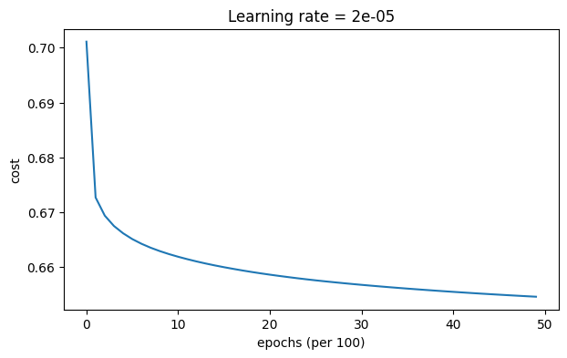
Accuracy: 0.6533333333333333
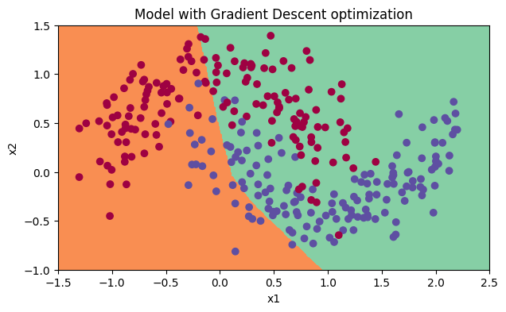
Notice that if you set the decay to occur at every iteration, the learning rate goes to zero too quickly - even if you start with a higher learning rate.
| Epoch Number | Learning Rate | Cost |
| 0 | 0.100000 | 0.701091 |
| 1000 | 0.000100 | 0.661884 |
| 2000 | 0.000050 | 0.658620 |
| 3000 | 0.000033 | 0.656765 |
| 4000 | 0.000025 | 0.655486 |
| 5000 | 0.000020 | 0.654514 |
When you’re training for a few epoch this doesn’t cause a lot of troubles, but when the number of epochs is large the optimization algorithm will stop updating. One common fix to this issue is to decay the learning rate every few steps. This is called fixed interval scheduling.
7.2 - Fixed Interval Scheduling#
You can help prevent the learning rate speeding to zero too quickly by scheduling the exponential learning rate decay at a fixed time interval, for example 1000. You can either number the intervals, or divide the epoch by the time interval, which is the size of window with the constant learning rate.
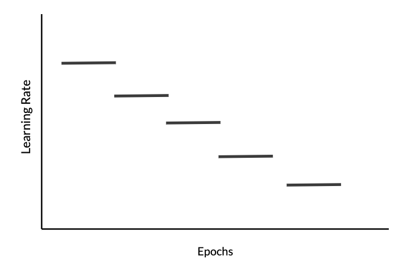
Exercise 8 - schedule_lr_decay#
Calculate the new learning rate using exponential weight decay with fixed interval scheduling.
Instructions: Implement the learning rate scheduling such that it only changes when the epochNum is a multiple of the timeInterval.
Note: The fraction in the denominator uses the floor operation.
Hint: numpy.floor
# GRADED FUNCTION: schedule_lr_decay
def schedule_lr_decay(learning_rate0, epoch_num, decay_rate, time_interval=1000):
"""
Calculates updated the learning rate using exponential weight decay.
Arguments:
learning_rate0 -- Original learning rate. Scalar
epoch_num -- Epoch number. Integer.
decay_rate -- Decay rate. Scalar.
time_interval -- Number of epochs where you update the learning rate.
Returns:
learning_rate -- Updated learning rate. Scalar
"""
# (approx. 1 lines)
# learning_rate = ...
# YOUR CODE STARTS HERE
learning_rate = learning_rate0 / (1 + decay_rate * np.floor(epoch_num / time_interval))
# YOUR CODE ENDS HERE
return learning_rate
learning_rate = 0.5
print("Original learning rate: ", learning_rate)
epoch_num_1 = 10
epoch_num_2 = 100
decay_rate = 0.3
time_interval = 100
learning_rate_1 = schedule_lr_decay(learning_rate, epoch_num_1, decay_rate, time_interval)
learning_rate_2 = schedule_lr_decay(learning_rate, epoch_num_2, decay_rate, time_interval)
print("Updated learning rate after {} epochs: ".format(epoch_num_1), learning_rate_1)
print("Updated learning rate after {} epochs: ".format(epoch_num_2), learning_rate_2)
schedule_lr_decay_test(schedule_lr_decay)
Original learning rate: 0.5
Updated learning rate after 10 epochs: 0.5
Updated learning rate after 100 epochs: 0.3846153846153846
All tests passed
Expected output
Original learning rate: 0.5
Updated learning rate after 10 epochs: 0.5
Updated learning rate after 100 epochs: 0.3846153846153846
7.3 - Using Learning Rate Decay for each Optimization Method#
Below, you’ll use the following “moons” dataset to test the different optimization methods. (The dataset is named “moons” because the data from each of the two classes looks a bit like a crescent-shaped moon.)
7.3.1 - Gradient Descent with Learning Rate Decay#
Run the following code to see how the model does gradient descent and learning rate decay.
# train 3-layer model
layers_dims = [train_X.shape[0], 5, 2, 1]
parameters = model(train_X, train_Y, layers_dims, optimizer = "gd", learning_rate = 0.1, num_epochs=5000, decay=schedule_lr_decay)
# Predict
predictions = predict(train_X, train_Y, parameters)
# Plot decision boundary
plt.title("Model with Gradient Descent optimization")
axes = plt.gca()
axes.set_xlim([-1.5,2.5])
axes.set_ylim([-1,1.5])
plot_decision_boundary(lambda x: predict_dec(parameters, x.T), train_X, train_Y)
Cost after epoch 0: 0.701091
learning rate after epoch 0: 0.100000
Cost after epoch 1000: 0.127161
learning rate after epoch 1000: 0.050000
Cost after epoch 2000: 0.120304
learning rate after epoch 2000: 0.033333
Cost after epoch 3000: 0.117033
learning rate after epoch 3000: 0.025000
Cost after epoch 4000: 0.117512
learning rate after epoch 4000: 0.020000
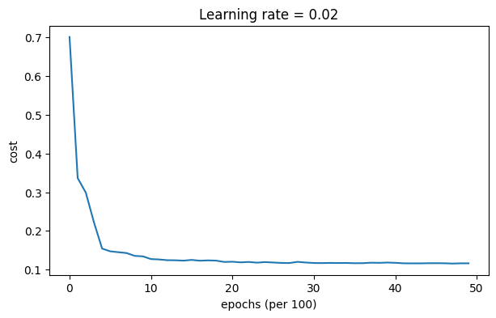
Accuracy: 0.9433333333333334
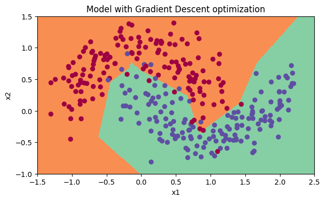
7.3.2 - Gradient Descent with Momentum and Learning Rate Decay#
Run the following code to see how the model does gradient descent with momentum and learning rate decay.
# train 3-layer model
layers_dims = [train_X.shape[0], 5, 2, 1]
parameters = model(train_X, train_Y, layers_dims, optimizer = "momentum", learning_rate = 0.1, num_epochs=5000, decay=schedule_lr_decay)
# Predict
predictions = predict(train_X, train_Y, parameters)
# Plot decision boundary
plt.title("Model with Gradient Descent with momentum optimization")
axes = plt.gca()
axes.set_xlim([-1.5,2.5])
axes.set_ylim([-1,1.5])
plot_decision_boundary(lambda x: predict_dec(parameters, x.T), train_X, train_Y)
Cost after epoch 0: 0.702226
learning rate after epoch 0: 0.100000
Cost after epoch 1000: 0.128974
learning rate after epoch 1000: 0.050000
Cost after epoch 2000: 0.125965
learning rate after epoch 2000: 0.033333
Cost after epoch 3000: 0.123375
learning rate after epoch 3000: 0.025000
Cost after epoch 4000: 0.123218
learning rate after epoch 4000: 0.020000
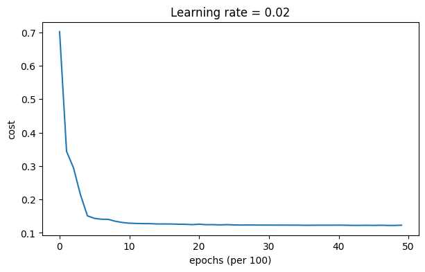
Accuracy: 0.9533333333333334
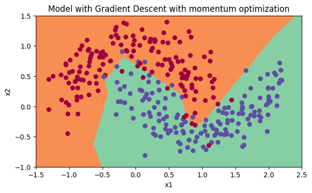
7.3.3 - Adam with Learning Rate Decay#
Run the following code to see how the model does Adam and learning rate decay.
# train 3-layer model
layers_dims = [train_X.shape[0], 5, 2, 1]
parameters = model(train_X, train_Y, layers_dims, optimizer = "adam", learning_rate = 0.01, num_epochs=5000, decay=schedule_lr_decay)
# Predict
predictions = predict(train_X, train_Y, parameters)
# Plot decision boundary
plt.title("Model with Adam optimization")
axes = plt.gca()
axes.set_xlim([-1.5,2.5])
axes.set_ylim([-1,1.5])
plot_decision_boundary(lambda x: predict_dec(parameters, x.T), train_X, train_Y)
Cost after epoch 0: 0.699346
learning rate after epoch 0: 0.010000
Cost after epoch 1000: 0.130074
learning rate after epoch 1000: 0.005000
Cost after epoch 2000: 0.129826
learning rate after epoch 2000: 0.003333
Cost after epoch 3000: 0.129282
learning rate after epoch 3000: 0.002500
Cost after epoch 4000: 0.128361
learning rate after epoch 4000: 0.002000
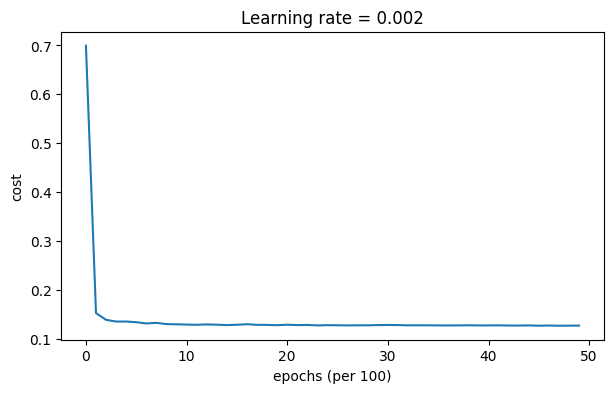
Accuracy: 0.94
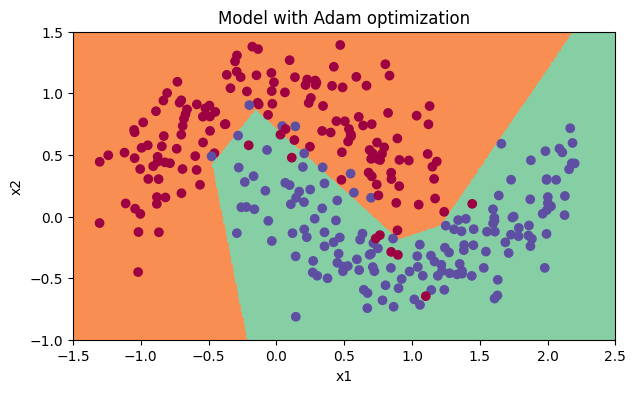
7.4 - Achieving similar performance with different methods#
With Mini-batch GD or Mini-batch GD with Momentum, the accuracy is significantly lower than Adam, but when learning rate decay is added on top, either can achieve performance at a speed and accuracy score that’s similar to Adam.
In the case of Adam, notice that the learning curve achieves a similar accuracy but faster.
| optimization method | accuracy | Gradient descent | >94.6% |
| Momentum | >95.6% |
| Adam | 94% |
Congratulations! You’ve made it to the end of the Optimization methods notebook. Here’s a quick recap of everything you’re now able to do:
Apply three different optimization methods to your models
Build mini-batches for your training set
Use learning rate decay scheduling to speed up your training
Great work!